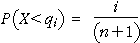

Order statistics
We are often interested in the minimum or maximum of a random sample. For example, the winner is often the person who throws a javelin furthest, runs a race in the smallest time or takes the smallest number of shots to complete a round of golf.
The minimum and maximum are order statistics. If a random sample of n values is sorted into ascending order, the i'th value is called the i'th order statistic and is denoted by x(i). (The brackets round the subscript show that this is the i'th order statistic, whereas xi denotes the i'th value in the order that the data were originally recorded.) The sample minimum is therefore x(1) and the maximum is x(n).
Properties of order statistics
The diagram below shows a random sample of 5 values from a normal distribution with mean 10.0 and standard deviation 5.0. Click Take sample a few times and observe that the minimum tends to be in the lower half of the normal distribution. (The bigger the sample size, the greater the tendency for the minimum to be in the lower tail of the distribution.)
The areas under the normal curve between the adjacent order statistics are shaded in the diagram and these areas are also shown as crosses in the lower half of the diagram. Note that a random sample of n = 5 values splits the histogram into (n+1) = 6 areas.
Click Accumulate then take about 100 samples. The diagram accumulates the distribution of the areas between the adjacent order statistics. Observe that the (n+1) areas all have the same distribution.
This result holds for random samples from any distribution — the areas under the probability density function between the order statistics all have the same distribution.
Center of the order statistics' distribution
Since all (n+1) areas between adjacent order statistics have the same distribution, and the total area under the probability density function is one, each area therefore has mean 1/(n+1).
Since the expected area to the left of the i'th order statistic, x(i), is therefore i/(n+1), the distribution of x(i) will therefore be centred near the value qi for which

The values qi are called quantiles of the distribution.
The diagram below shows the quantiles for a normal distribution; they are close to the expected values of the order statistics from that distribution.
Observe that the quantiles are closer together in the centre of the distribution -- as you would expect since the density there is higher.